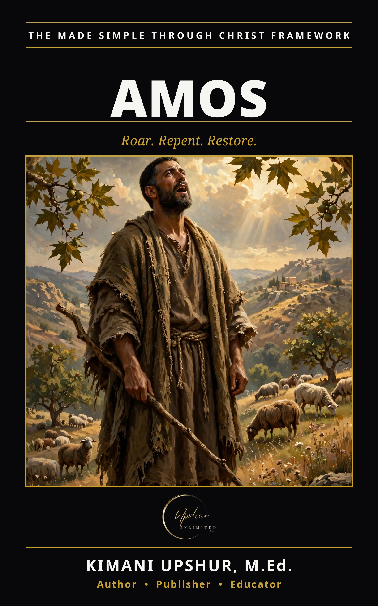

Amos
by Kimani Upshur, M.Ed.
Amos was a shepherd from Tekoa — no school, no credentials, no pulpit — when God sent him north with a roar to a wealthy, religious kingdom. This book walks through Amos chapter by chapter, Scripture first, with teaching that bows to it. The oracles fall first on six foreign nations — Damascus, Gaza, Tyre, Edom, Ammon, Moab. Then the trap springs: Judah is seventh; Israel is eighth and longest. Election, Amos insists, is not exemption: "You only have I known of all the families of the earth; therefore I will punish you for all your iniquities." Five disciplines fail to turn the people, and the summons lands: "Prepare to meet your God." Then comes the call to turn. God refuses the noise of songs and demands justice instead — "let justice roll down like waters, and righteousness like an ever-flowing stream" (Amos 5:24). The prophet intercedes; God relents — twice. The plumb line is set in the midst of the people. The priest who tries to deport Amos hears the answer of every called messenger: "The Lord took me." Past the end — the basket of summer fruit, the famine of hearing — comes the promise: the booth of David raised, the nations called by God's name, a planting never to be uprooted. Twelve chapters, one message, three words: Roar. Repent. Restore. This is a Christian book, and it closes with a personal invitation to give your life to Jesus Christ. Amos is a standalone volume in THE MADE SIMPLE FRAMEWORK by Kimani Upshur, M.Ed. (Upshur Unlimited, LLC).
- Publisher
- Upshur Unlimited, LLC
- Author
- Kimani Upshur, M.Ed.
- Format
- Ebook
- Language
- English